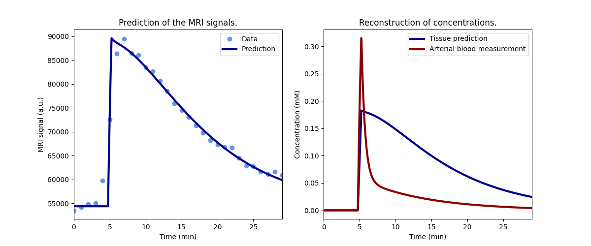

Note
Go to the end to download the full example code.
Preclinical - repeat dosing effects on liver function#
This example illustrates the use of Liver for fitting of signals
measured in liver. The use case is provided by the liver work package of the
TRISTAN project which develops imaging
biomarkers for drug safety assessment. The manuscript relating to this data
and analysis is currently in preparation.
The specific objective of the study was to investigate the potential of gadoxetate-enhanced DCE-MRI to study acute inhibition of hepatocyte transporters of drug-induced liver injury (DILI) causing drugs, and to study potential changes in transporter function after chronic dosing.
The study presented here measured gadoxetate uptake and excretion in healthy rats scanned after administration of vehicle and repetitive dosing regimes of either Rifampicin, Cyclosporine, or Bosentan. Studies were performed in preclinical MRI scanners at 3 different centers and 2 different field strengths.
Reference
Mikael Montelius, Steven Sourbron, Nicola Melillo, Daniel Scotcher, Aleksandra Galetin, Gunnar Schuetz, Claudia Green, Edvin Johansson, John C. Waterton, and Paul Hockings. Acute and chronic rifampicin effect on gadoxetate uptake in rats using gadoxetate DCE-MRI. Int Soc Mag Reson Med 2021; 2674.
Setup#
Model definition#
In order to avoid some repetition in this script, we define a function that returns a trained model for a single dataset.
The model uses a standardized, population-average input function and fits for only 2 parameters, fixing all other free parameters to typical values for this rat model:
def tristan_rat(roi, par, **kwargs):
# High-resolution time points for prediction
t = np.arange(0, np.amax(roi['time'])+0.5, 0.5)
# Standard input function
ca = dc.aif_tristan_rat(t, BAT=par['BAT'], duration=par['duration'])
# Liver model with population input function
model = dc.Liver(
# Input parameters
t = t,
ca = ca,
# Acquisition parameters
field_strength = par['field_strength'],
TR = par['TR'],
FA = par['FA'],
n0 = par['n0'],
# Configure as in the TRISTAN-rat study
config = 'TRISTAN-rat',
)
return model.train(roi['time'], roi['liver'], **kwargs)
Check model fit#
Before running the full analysis on all cases, lets illustrate the results by fitting the baseline visit for the first subject. We use maximum verbosity to get some feedback about the iterations:
Iteration Total nfev Cost Cost reduction Step norm Optimality
0 1 1.0009e+09 4.77e+10
1 3 8.8478e+08 1.16e+08 3.92e+02 6.03e+10
2 4 5.8515e+08 3.00e+08 6.93e+02 2.42e+11
3 5 4.2558e+08 1.60e+08 3.70e+01 1.72e+10
4 6 3.1239e+08 1.13e+08 3.74e+02 1.96e+11
5 7 4.6233e+07 2.66e+08 5.87e+01 4.11e+10
6 8 2.4695e+07 2.15e+07 1.75e+01 5.59e+07
7 9 2.4689e+07 6.59e+03 9.27e-01 5.50e+06
8 10 2.4689e+07 8.26e-01 8.27e-03 2.16e+03
`xtol` termination condition is satisfied.
Function evaluations 10, initial cost 1.0009e+09, final cost 2.4689e+07, first-order optimality 2.16e+03.
Plot the results to check that the model has fitted the data:
Print the measured model parameters and any derived parameters and check that standard deviations of measured parameters are small relative to the value, indicating that the parameters are measured reliably:
model.print_params(round_to=3)
--------------------------------
Free parameters with their stdev
--------------------------------
Hepatocellular uptake rate (khe): 0.011 (0.0) mL/sec/cm3
Hepatocellular mean transit time (Th): 262.024 (10.683) sec
----------------------------
Fixed and derived parameters
----------------------------
Hematocrit (H): 0.418
Liver extracellular volume fraction (ve): 0.23 mL/cm3
Biliary tissue excretion rate (Kbh): 0.004 mL/sec/cm3
Hepatocellular tissue uptake rate (Khe): 0.049 mL/sec/cm3
Biliary excretion rate (kbh): 0.003 mL/sec/cm3
Liver extraction fraction (E): 0.339
Hepatic plasma clearance (Ktrans): 0.007 mL/sec/cm3
Fit all data#
Now that we have illustrated an individual result in some detail, we proceed with fitting all the data. Results are stored in a dataframe in long format:
results = []
# Loop over all datasets
for subj in rois.keys():
for visit in rois[subj].keys():
roi = rois[subj][visit]
par = pars[subj][visit]
# Generate a trained model
model = tristan_rat(roi, par, xtol=1e-3)
# Export fitted parameters as lists
rows = model.export_params(type='list')
# Add study, visit and subject info
rows = [row + [par['study'], par['visit'], subj] for row in rows]
# Add to the list of all results
results += rows
# Combine all results into a single dataframe.
cols = ['parameter', 'name', 'value', 'unit', 'stdev', 'study',
'visit', 'subject']
results = pd.DataFrame(results, columns=cols)
# Print all results
print(results.to_string())
parameter name value unit stdev study visit subject
0 H Hematocrit 0.418000 0.000000 1 3 S01-10
1 ve Liver extracellular volume fraction 0.230000 mL/cm3 0.000000 1 3 S01-10
2 khe Hepatocellular uptake rate 0.011274 mL/sec/cm3 0.000429 1 3 S01-10
3 Th Hepatocellular mean transit time 262.024383 sec 10.682974 1 3 S01-10
4 Kbh Biliary tissue excretion rate 0.003816 mL/sec/cm3 0.000000 1 3 S01-10
5 Khe Hepatocellular tissue uptake rate 0.049019 mL/sec/cm3 0.000000 1 3 S01-10
6 kbh Biliary excretion rate 0.002939 mL/sec/cm3 0.000000 1 3 S01-10
7 E Liver extraction fraction 0.338637 0.000000 1 3 S01-10
8 Ktrans Hepatic plasma clearance 0.007456 mL/sec/cm3 0.000000 1 3 S01-10
9 H Hematocrit 0.418000 0.000000 1 4 S01-10
10 ve Liver extracellular volume fraction 0.230000 mL/cm3 0.000000 1 4 S01-10
11 khe Hepatocellular uptake rate 0.010626 mL/sec/cm3 0.000372 1 4 S01-10
12 Th Hepatocellular mean transit time 367.581316 sec 14.526235 1 4 S01-10
13 Kbh Biliary tissue excretion rate 0.002720 mL/sec/cm3 0.000000 1 4 S01-10
14 Khe Hepatocellular tissue uptake rate 0.046202 mL/sec/cm3 0.000000 1 4 S01-10
15 kbh Biliary excretion rate 0.002095 mL/sec/cm3 0.000000 1 4 S01-10
16 E Liver extraction fraction 0.325510 0.000000 1 4 S01-10
17 Ktrans Hepatic plasma clearance 0.007167 mL/sec/cm3 0.000000 1 4 S01-10
18 H Hematocrit 0.418000 0.000000 1 1 S01-11
19 ve Liver extracellular volume fraction 0.230000 mL/cm3 0.000000 1 1 S01-11
20 khe Hepatocellular uptake rate 0.013865 mL/sec/cm3 0.000621 1 1 S01-11
21 Th Hepatocellular mean transit time 425.796488 sec 21.939712 1 1 S01-11
22 Kbh Biliary tissue excretion rate 0.002349 mL/sec/cm3 0.000000 1 1 S01-11
23 Khe Hepatocellular tissue uptake rate 0.060282 mL/sec/cm3 0.000000 1 1 S01-11
24 kbh Biliary excretion rate 0.001808 mL/sec/cm3 0.000000 1 1 S01-11
25 E Liver extraction fraction 0.386382 0.000000 1 1 S01-11
26 Ktrans Hepatic plasma clearance 0.008508 mL/sec/cm3 0.000000 1 1 S01-11
27 H Hematocrit 0.418000 0.000000 1 2 S01-11
28 ve Liver extracellular volume fraction 0.230000 mL/cm3 0.000000 1 2 S01-11
29 khe Hepatocellular uptake rate 0.001621 mL/sec/cm3 0.000192 1 2 S01-11
30 Th Hepatocellular mean transit time 2599.285794 sec 1208.566470 1 2 S01-11
31 Kbh Biliary tissue excretion rate 0.000385 mL/sec/cm3 0.000000 1 2 S01-11
32 Khe Hepatocellular tissue uptake rate 0.007050 mL/sec/cm3 0.000000 1 2 S01-11
33 kbh Biliary excretion rate 0.000296 mL/sec/cm3 0.000000 1 2 S01-11
34 E Liver extraction fraction 0.068589 0.000000 1 2 S01-11
35 Ktrans Hepatic plasma clearance 0.001510 mL/sec/cm3 0.000000 1 2 S01-11
36 H Hematocrit 0.418000 0.000000 1 3 S01-11
37 ve Liver extracellular volume fraction 0.230000 mL/cm3 0.000000 1 3 S01-11
38 khe Hepatocellular uptake rate 0.002128 mL/sec/cm3 0.000288 1 3 S01-11
39 Th Hepatocellular mean transit time 984.146706 sec 241.814768 1 3 S01-11
40 Kbh Biliary tissue excretion rate 0.001016 mL/sec/cm3 0.000000 1 3 S01-11
41 Khe Hepatocellular tissue uptake rate 0.009251 mL/sec/cm3 0.000000 1 3 S01-11
42 kbh Biliary excretion rate 0.000782 mL/sec/cm3 0.000000 1 3 S01-11
43 E Liver extraction fraction 0.088113 0.000000 1 3 S01-11
44 Ktrans Hepatic plasma clearance 0.001940 mL/sec/cm3 0.000000 1 3 S01-11
45 H Hematocrit 0.418000 0.000000 1 4 S01-11
46 ve Liver extracellular volume fraction 0.230000 mL/cm3 0.000000 1 4 S01-11
47 khe Hepatocellular uptake rate 0.004891 mL/sec/cm3 0.000216 1 4 S01-11
48 Th Hepatocellular mean transit time 600.638757 sec 36.091695 1 4 S01-11
49 Kbh Biliary tissue excretion rate 0.001665 mL/sec/cm3 0.000000 1 4 S01-11
50 Khe Hepatocellular tissue uptake rate 0.021265 mL/sec/cm3 0.000000 1 4 S01-11
51 kbh Biliary excretion rate 0.001282 mL/sec/cm3 0.000000 1 4 S01-11
52 E Liver extraction fraction 0.181754 0.000000 1 4 S01-11
53 Ktrans Hepatic plasma clearance 0.004002 mL/sec/cm3 0.000000 1 4 S01-11
54 H Hematocrit 0.418000 0.000000 1 1 S01-12
55 ve Liver extracellular volume fraction 0.230000 mL/cm3 0.000000 1 1 S01-12
56 khe Hepatocellular uptake rate 0.014421 mL/sec/cm3 0.000761 1 1 S01-12
57 Th Hepatocellular mean transit time 418.686543 sec 25.251571 1 1 S01-12
58 Kbh Biliary tissue excretion rate 0.002388 mL/sec/cm3 0.000000 1 1 S01-12
59 Khe Hepatocellular tissue uptake rate 0.062699 mL/sec/cm3 0.000000 1 1 S01-12
60 kbh Biliary excretion rate 0.001839 mL/sec/cm3 0.000000 1 1 S01-12
61 E Liver extraction fraction 0.395743 0.000000 1 1 S01-12
62 Ktrans Hepatic plasma clearance 0.008714 mL/sec/cm3 0.000000 1 1 S01-12
63 H Hematocrit 0.418000 0.000000 1 2 S01-12
64 ve Liver extracellular volume fraction 0.230000 mL/cm3 0.000000 1 2 S01-12
65 khe Hepatocellular uptake rate 0.014377 mL/sec/cm3 0.000457 1 2 S01-12
66 Th Hepatocellular mean transit time 338.192516 sec 11.726670 1 2 S01-12
67 Kbh Biliary tissue excretion rate 0.002957 mL/sec/cm3 0.000000 1 2 S01-12
68 Khe Hepatocellular tissue uptake rate 0.062507 mL/sec/cm3 0.000000 1 2 S01-12
69 kbh Biliary excretion rate 0.002277 mL/sec/cm3 0.000000 1 2 S01-12
70 E Liver extraction fraction 0.395011 0.000000 1 2 S01-12
71 Ktrans Hepatic plasma clearance 0.008698 mL/sec/cm3 0.000000 1 2 S01-12
72 H Hematocrit 0.418000 0.000000 1 3 S01-12
73 ve Liver extracellular volume fraction 0.230000 mL/cm3 0.000000 1 3 S01-12
74 khe Hepatocellular uptake rate 0.010943 mL/sec/cm3 0.000370 1 3 S01-12
75 Th Hepatocellular mean transit time 433.622906 sec 17.207635 1 3 S01-12
76 Kbh Biliary tissue excretion rate 0.002306 mL/sec/cm3 0.000000 1 3 S01-12
77 Khe Hepatocellular tissue uptake rate 0.047577 mL/sec/cm3 0.000000 1 3 S01-12
78 kbh Biliary excretion rate 0.001776 mL/sec/cm3 0.000000 1 3 S01-12
79 E Liver extraction fraction 0.331983 0.000000 1 3 S01-12
80 Ktrans Hepatic plasma clearance 0.007310 mL/sec/cm3 0.000000 1 3 S01-12
81 H Hematocrit 0.418000 0.000000 1 4 S01-12
82 ve Liver extracellular volume fraction 0.230000 mL/cm3 0.000000 1 4 S01-12
83 khe Hepatocellular uptake rate 0.013804 mL/sec/cm3 0.000467 1 4 S01-12
84 Th Hepatocellular mean transit time 467.989039 sec 18.757885 1 4 S01-12
85 Kbh Biliary tissue excretion rate 0.002137 mL/sec/cm3 0.000000 1 4 S01-12
86 Khe Hepatocellular tissue uptake rate 0.060016 mL/sec/cm3 0.000000 1 4 S01-12
87 kbh Biliary excretion rate 0.001645 mL/sec/cm3 0.000000 1 4 S01-12
88 E Liver extraction fraction 0.385333 0.000000 1 4 S01-12
89 Ktrans Hepatic plasma clearance 0.008485 mL/sec/cm3 0.000000 1 4 S01-12
90 H Hematocrit 0.418000 0.000000 1 1 S01-01
91 ve Liver extracellular volume fraction 0.230000 mL/cm3 0.000000 1 1 S01-01
92 khe Hepatocellular uptake rate 0.009365 mL/sec/cm3 0.000289 1 1 S01-01
93 Th Hepatocellular mean transit time 457.941799 sec 16.992228 1 1 S01-01
94 Kbh Biliary tissue excretion rate 0.002184 mL/sec/cm3 0.000000 1 1 S01-01
95 Khe Hepatocellular tissue uptake rate 0.040717 mL/sec/cm3 0.000000 1 1 S01-01
96 kbh Biliary excretion rate 0.001681 mL/sec/cm3 0.000000 1 1 S01-01
97 E Liver extraction fraction 0.298397 0.000000 1 1 S01-01
98 Ktrans Hepatic plasma clearance 0.006570 mL/sec/cm3 0.000000 1 1 S01-01
99 H Hematocrit 0.418000 0.000000 1 2 S01-01
100 ve Liver extracellular volume fraction 0.230000 mL/cm3 0.000000 1 2 S01-01
101 khe Hepatocellular uptake rate 0.004197 mL/sec/cm3 0.000219 1 2 S01-01
102 Th Hepatocellular mean transit time 707.704964 sec 54.826880 1 2 S01-01
103 Kbh Biliary tissue excretion rate 0.001413 mL/sec/cm3 0.000000 1 2 S01-01
104 Khe Hepatocellular tissue uptake rate 0.018246 mL/sec/cm3 0.000000 1 2 S01-01
105 kbh Biliary excretion rate 0.001088 mL/sec/cm3 0.000000 1 2 S01-01
106 E Liver extraction fraction 0.160083 0.000000 1 2 S01-01
107 Ktrans Hepatic plasma clearance 0.003525 mL/sec/cm3 0.000000 1 2 S01-01
108 H Hematocrit 0.418000 0.000000 1 3 S01-01
109 ve Liver extracellular volume fraction 0.230000 mL/cm3 0.000000 1 3 S01-01
110 khe Hepatocellular uptake rate 0.008355 mL/sec/cm3 0.000486 1 3 S01-01
111 Th Hepatocellular mean transit time 315.276953 sec 21.432871 1 3 S01-01
112 Kbh Biliary tissue excretion rate 0.003172 mL/sec/cm3 0.000000 1 3 S01-01
113 Khe Hepatocellular tissue uptake rate 0.036326 mL/sec/cm3 0.000000 1 3 S01-01
114 kbh Biliary excretion rate 0.002442 mL/sec/cm3 0.000000 1 3 S01-01
115 E Liver extraction fraction 0.275070 0.000000 1 3 S01-01
116 Ktrans Hepatic plasma clearance 0.006057 mL/sec/cm3 0.000000 1 3 S01-01
117 H Hematocrit 0.418000 0.000000 1 4 S01-01
118 ve Liver extracellular volume fraction 0.230000 mL/cm3 0.000000 1 4 S01-01
119 khe Hepatocellular uptake rate 0.013968 mL/sec/cm3 0.000882 1 4 S01-01
120 Th Hepatocellular mean transit time 386.340943 sec 27.350383 1 4 S01-01
121 Kbh Biliary tissue excretion rate 0.002588 mL/sec/cm3 0.000000 1 4 S01-01
122 Khe Hepatocellular tissue uptake rate 0.060730 mL/sec/cm3 0.000000 1 4 S01-01
123 kbh Biliary excretion rate 0.001993 mL/sec/cm3 0.000000 1 4 S01-01
124 E Liver extraction fraction 0.388140 0.000000 1 4 S01-01
125 Ktrans Hepatic plasma clearance 0.008546 mL/sec/cm3 0.000000 1 4 S01-01
126 H Hematocrit 0.418000 0.000000 1 1 S01-02
127 ve Liver extracellular volume fraction 0.230000 mL/cm3 0.000000 1 1 S01-02
128 khe Hepatocellular uptake rate 0.011672 mL/sec/cm3 0.000519 1 1 S01-02
129 Th Hepatocellular mean transit time 486.505634 sec 26.259471 1 1 S01-02
130 Kbh Biliary tissue excretion rate 0.002055 mL/sec/cm3 0.000000 1 1 S01-02
131 Khe Hepatocellular tissue uptake rate 0.050749 mL/sec/cm3 0.000000 1 1 S01-02
132 kbh Biliary excretion rate 0.001583 mL/sec/cm3 0.000000 1 1 S01-02
133 E Liver extraction fraction 0.346447 0.000000 1 1 S01-02
134 Ktrans Hepatic plasma clearance 0.007628 mL/sec/cm3 0.000000 1 1 S01-02
135 H Hematocrit 0.418000 0.000000 1 2 S01-02
136 ve Liver extracellular volume fraction 0.230000 mL/cm3 0.000000 1 2 S01-02
137 khe Hepatocellular uptake rate 0.003634 mL/sec/cm3 0.000234 1 2 S01-02
138 Th Hepatocellular mean transit time 1066.525898 sec 131.330189 1 2 S01-02
139 Kbh Biliary tissue excretion rate 0.000938 mL/sec/cm3 0.000000 1 2 S01-02
140 Khe Hepatocellular tissue uptake rate 0.015802 mL/sec/cm3 0.000000 1 2 S01-02
141 kbh Biliary excretion rate 0.000722 mL/sec/cm3 0.000000 1 2 S01-02
142 E Liver extraction fraction 0.141673 0.000000 1 2 S01-02
143 Ktrans Hepatic plasma clearance 0.003120 mL/sec/cm3 0.000000 1 2 S01-02
144 H Hematocrit 0.418000 0.000000 1 3 S01-02
145 ve Liver extracellular volume fraction 0.230000 mL/cm3 0.000000 1 3 S01-02
146 khe Hepatocellular uptake rate 0.004653 mL/sec/cm3 0.000385 1 3 S01-02
147 Th Hepatocellular mean transit time 703.332492 sec 85.708790 1 3 S01-02
148 Kbh Biliary tissue excretion rate 0.001422 mL/sec/cm3 0.000000 1 3 S01-02
149 Khe Hepatocellular tissue uptake rate 0.020229 mL/sec/cm3 0.000000 1 3 S01-02
150 kbh Biliary excretion rate 0.001095 mL/sec/cm3 0.000000 1 3 S01-02
151 E Liver extraction fraction 0.174445 0.000000 1 3 S01-02
152 Ktrans Hepatic plasma clearance 0.003841 mL/sec/cm3 0.000000 1 3 S01-02
153 H Hematocrit 0.418000 0.000000 1 4 S01-02
154 ve Liver extracellular volume fraction 0.230000 mL/cm3 0.000000 1 4 S01-02
155 khe Hepatocellular uptake rate 0.015322 mL/sec/cm3 0.000550 1 4 S01-02
156 Th Hepatocellular mean transit time 316.458615 sec 12.194216 1 4 S01-02
157 Kbh Biliary tissue excretion rate 0.003160 mL/sec/cm3 0.000000 1 4 S01-02
158 Khe Hepatocellular tissue uptake rate 0.066618 mL/sec/cm3 0.000000 1 4 S01-02
159 kbh Biliary excretion rate 0.002433 mL/sec/cm3 0.000000 1 4 S01-02
160 E Liver extraction fraction 0.410329 0.000000 1 4 S01-02
161 Ktrans Hepatic plasma clearance 0.009035 mL/sec/cm3 0.000000 1 4 S01-02
162 H Hematocrit 0.418000 0.000000 1 1 S01-03
163 ve Liver extracellular volume fraction 0.230000 mL/cm3 0.000000 1 1 S01-03
164 khe Hepatocellular uptake rate 0.019435 mL/sec/cm3 0.000866 1 1 S01-03
165 Th Hepatocellular mean transit time 313.596365 sec 14.726232 1 1 S01-03
166 Kbh Biliary tissue excretion rate 0.003189 mL/sec/cm3 0.000000 1 1 S01-03
167 Khe Hepatocellular tissue uptake rate 0.084500 mL/sec/cm3 0.000000 1 1 S01-03
168 kbh Biliary excretion rate 0.002455 mL/sec/cm3 0.000000 1 1 S01-03
169 E Liver extraction fraction 0.468832 0.000000 1 1 S01-03
170 Ktrans Hepatic plasma clearance 0.010323 mL/sec/cm3 0.000000 1 1 S01-03
171 H Hematocrit 0.418000 0.000000 1 2 S01-03
172 ve Liver extracellular volume fraction 0.230000 mL/cm3 0.000000 1 2 S01-03
173 khe Hepatocellular uptake rate 0.015307 mL/sec/cm3 0.000721 1 2 S01-03
174 Th Hepatocellular mean transit time 328.336021 sec 16.699603 1 2 S01-03
175 Kbh Biliary tissue excretion rate 0.003046 mL/sec/cm3 0.000000 1 2 S01-03
176 Khe Hepatocellular tissue uptake rate 0.066553 mL/sec/cm3 0.000000 1 2 S01-03
177 kbh Biliary excretion rate 0.002345 mL/sec/cm3 0.000000 1 2 S01-03
178 E Liver extraction fraction 0.410093 0.000000 1 2 S01-03
179 Ktrans Hepatic plasma clearance 0.009030 mL/sec/cm3 0.000000 1 2 S01-03
180 H Hematocrit 0.418000 0.000000 1 3 S01-03
181 ve Liver extracellular volume fraction 0.230000 mL/cm3 0.000000 1 3 S01-03
182 khe Hepatocellular uptake rate 0.012718 mL/sec/cm3 0.000765 1 3 S01-03
183 Th Hepatocellular mean transit time 396.829889 sec 27.093897 1 3 S01-03
184 Kbh Biliary tissue excretion rate 0.002520 mL/sec/cm3 0.000000 1 3 S01-03
185 Khe Hepatocellular tissue uptake rate 0.055296 mL/sec/cm3 0.000000 1 3 S01-03
186 kbh Biliary excretion rate 0.001940 mL/sec/cm3 0.000000 1 3 S01-03
187 E Liver extraction fraction 0.366123 0.000000 1 3 S01-03
188 Ktrans Hepatic plasma clearance 0.008062 mL/sec/cm3 0.000000 1 3 S01-03
189 H Hematocrit 0.418000 0.000000 1 4 S01-03
190 ve Liver extracellular volume fraction 0.230000 mL/cm3 0.000000 1 4 S01-03
191 khe Hepatocellular uptake rate 0.015905 mL/sec/cm3 0.000853 1 4 S01-03
192 Th Hepatocellular mean transit time 349.894807 sec 20.433865 1 4 S01-03
193 Kbh Biliary tissue excretion rate 0.002858 mL/sec/cm3 0.000000 1 4 S01-03
194 Khe Hepatocellular tissue uptake rate 0.069150 mL/sec/cm3 0.000000 1 4 S01-03
195 kbh Biliary excretion rate 0.002201 mL/sec/cm3 0.000000 1 4 S01-03
196 E Liver extraction fraction 0.419384 0.000000 1 4 S01-03
197 Ktrans Hepatic plasma clearance 0.009234 mL/sec/cm3 0.000000 1 4 S01-03
198 H Hematocrit 0.418000 0.000000 1 1 S01-04
199 ve Liver extracellular volume fraction 0.230000 mL/cm3 0.000000 1 1 S01-04
200 khe Hepatocellular uptake rate 0.002513 mL/sec/cm3 0.000275 1 1 S01-04
201 Th Hepatocellular mean transit time 433.723892 sec 58.119042 1 1 S01-04
202 Kbh Biliary tissue excretion rate 0.002306 mL/sec/cm3 0.000000 1 1 S01-04
203 Khe Hepatocellular tissue uptake rate 0.010928 mL/sec/cm3 0.000000 1 1 S01-04
204 kbh Biliary excretion rate 0.001775 mL/sec/cm3 0.000000 1 1 S01-04
205 E Liver extraction fraction 0.102455 0.000000 1 1 S01-04
206 Ktrans Hepatic plasma clearance 0.002256 mL/sec/cm3 0.000000 1 1 S01-04
207 H Hematocrit 0.418000 0.000000 1 2 S01-04
208 ve Liver extracellular volume fraction 0.230000 mL/cm3 0.000000 1 2 S01-04
209 khe Hepatocellular uptake rate 0.004691 mL/sec/cm3 0.000308 1 2 S01-04
210 Th Hepatocellular mean transit time 514.295965 sec 43.251279 1 2 S01-04
211 Kbh Biliary tissue excretion rate 0.001944 mL/sec/cm3 0.000000 1 2 S01-04
212 Khe Hepatocellular tissue uptake rate 0.020397 mL/sec/cm3 0.000000 1 2 S01-04
213 kbh Biliary excretion rate 0.001497 mL/sec/cm3 0.000000 1 2 S01-04
214 E Liver extraction fraction 0.175639 0.000000 1 2 S01-04
215 Ktrans Hepatic plasma clearance 0.003867 mL/sec/cm3 0.000000 1 2 S01-04
216 H Hematocrit 0.418000 0.000000 1 3 S01-04
217 ve Liver extracellular volume fraction 0.230000 mL/cm3 0.000000 1 3 S01-04
218 khe Hepatocellular uptake rate 0.014515 mL/sec/cm3 0.000635 1 3 S01-04
219 Th Hepatocellular mean transit time 281.738612 sec 13.098338 1 3 S01-04
220 Kbh Biliary tissue excretion rate 0.003549 mL/sec/cm3 0.000000 1 3 S01-04
221 Khe Hepatocellular tissue uptake rate 0.063111 mL/sec/cm3 0.000000 1 3 S01-04
222 kbh Biliary excretion rate 0.002733 mL/sec/cm3 0.000000 1 3 S01-04
223 E Liver extraction fraction 0.397309 0.000000 1 3 S01-04
224 Ktrans Hepatic plasma clearance 0.008748 mL/sec/cm3 0.000000 1 3 S01-04
225 H Hematocrit 0.418000 0.000000 1 4 S01-04
226 ve Liver extracellular volume fraction 0.230000 mL/cm3 0.000000 1 4 S01-04
227 khe Hepatocellular uptake rate 0.004045 mL/sec/cm3 0.000348 1 4 S01-04
228 Th Hepatocellular mean transit time 393.722829 sec 40.183718 1 4 S01-04
229 Kbh Biliary tissue excretion rate 0.002540 mL/sec/cm3 0.000000 1 4 S01-04
230 Khe Hepatocellular tissue uptake rate 0.017588 mL/sec/cm3 0.000000 1 4 S01-04
231 kbh Biliary excretion rate 0.001956 mL/sec/cm3 0.000000 1 4 S01-04
232 E Liver extraction fraction 0.155200 0.000000 1 4 S01-04
233 Ktrans Hepatic plasma clearance 0.003417 mL/sec/cm3 0.000000 1 4 S01-04
234 H Hematocrit 0.418000 0.000000 1 1 S01-05
235 ve Liver extracellular volume fraction 0.230000 mL/cm3 0.000000 1 1 S01-05
236 khe Hepatocellular uptake rate 0.011666 mL/sec/cm3 0.000561 1 1 S01-05
237 Th Hepatocellular mean transit time 446.923002 sec 25.337009 1 1 S01-05
238 Kbh Biliary tissue excretion rate 0.002238 mL/sec/cm3 0.000000 1 1 S01-05
239 Khe Hepatocellular tissue uptake rate 0.050722 mL/sec/cm3 0.000000 1 1 S01-05
240 kbh Biliary excretion rate 0.001723 mL/sec/cm3 0.000000 1 1 S01-05
241 E Liver extraction fraction 0.346329 0.000000 1 1 S01-05
242 Ktrans Hepatic plasma clearance 0.007626 mL/sec/cm3 0.000000 1 1 S01-05
243 H Hematocrit 0.418000 0.000000 1 2 S01-05
244 ve Liver extracellular volume fraction 0.230000 mL/cm3 0.000000 1 2 S01-05
245 khe Hepatocellular uptake rate 0.002686 mL/sec/cm3 0.000265 1 2 S01-05
246 Th Hepatocellular mean transit time 1445.572399 sec 342.106039 1 2 S01-05
247 Kbh Biliary tissue excretion rate 0.000692 mL/sec/cm3 0.000000 1 2 S01-05
248 Khe Hepatocellular tissue uptake rate 0.011677 mL/sec/cm3 0.000000 1 2 S01-05
249 kbh Biliary excretion rate 0.000533 mL/sec/cm3 0.000000 1 2 S01-05
250 E Liver extraction fraction 0.108713 0.000000 1 2 S01-05
251 Ktrans Hepatic plasma clearance 0.002394 mL/sec/cm3 0.000000 1 2 S01-05
252 H Hematocrit 0.418000 0.000000 1 3 S01-05
253 ve Liver extracellular volume fraction 0.230000 mL/cm3 0.000000 1 3 S01-05
254 khe Hepatocellular uptake rate 0.009382 mL/sec/cm3 0.000293 1 3 S01-05
255 Th Hepatocellular mean transit time 431.688412 sec 15.892626 1 3 S01-05
256 Kbh Biliary tissue excretion rate 0.002316 mL/sec/cm3 0.000000 1 3 S01-05
257 Khe Hepatocellular tissue uptake rate 0.040792 mL/sec/cm3 0.000000 1 3 S01-05
258 kbh Biliary excretion rate 0.001784 mL/sec/cm3 0.000000 1 3 S01-05
259 E Liver extraction fraction 0.298782 0.000000 1 3 S01-05
260 Ktrans Hepatic plasma clearance 0.006579 mL/sec/cm3 0.000000 1 3 S01-05
261 H Hematocrit 0.418000 0.000000 1 4 S01-05
262 ve Liver extracellular volume fraction 0.230000 mL/cm3 0.000000 1 4 S01-05
263 khe Hepatocellular uptake rate 0.015855 mL/sec/cm3 0.000828 1 4 S01-05
264 Th Hepatocellular mean transit time 373.972009 sec 21.556546 1 4 S01-05
265 Kbh Biliary tissue excretion rate 0.002674 mL/sec/cm3 0.000000 1 4 S01-05
266 Khe Hepatocellular tissue uptake rate 0.068936 mL/sec/cm3 0.000000 1 4 S01-05
267 kbh Biliary excretion rate 0.002059 mL/sec/cm3 0.000000 1 4 S01-05
268 E Liver extraction fraction 0.418629 0.000000 1 4 S01-05
269 Ktrans Hepatic plasma clearance 0.009218 mL/sec/cm3 0.000000 1 4 S01-05
270 H Hematocrit 0.418000 0.000000 1 1 S01-06
271 ve Liver extracellular volume fraction 0.230000 mL/cm3 0.000000 1 1 S01-06
272 khe Hepatocellular uptake rate 0.018791 mL/sec/cm3 0.000913 1 1 S01-06
273 Th Hepatocellular mean transit time 250.553876 sec 12.584461 1 1 S01-06
274 Kbh Biliary tissue excretion rate 0.003991 mL/sec/cm3 0.000000 1 1 S01-06
275 Khe Hepatocellular tissue uptake rate 0.081701 mL/sec/cm3 0.000000 1 1 S01-06
276 kbh Biliary excretion rate 0.003073 mL/sec/cm3 0.000000 1 1 S01-06
277 E Liver extraction fraction 0.460454 0.000000 1 1 S01-06
278 Ktrans Hepatic plasma clearance 0.010139 mL/sec/cm3 0.000000 1 1 S01-06
279 H Hematocrit 0.418000 0.000000 1 2 S01-06
280 ve Liver extracellular volume fraction 0.230000 mL/cm3 0.000000 1 2 S01-06
281 khe Hepatocellular uptake rate 0.014189 mL/sec/cm3 0.000837 1 2 S01-06
282 Th Hepatocellular mean transit time 243.650700 sec 15.128079 1 2 S01-06
283 Kbh Biliary tissue excretion rate 0.004104 mL/sec/cm3 0.000000 1 2 S01-06
284 Khe Hepatocellular tissue uptake rate 0.061690 mL/sec/cm3 0.000000 1 2 S01-06
285 kbh Biliary excretion rate 0.003160 mL/sec/cm3 0.000000 1 2 S01-06
286 E Liver extraction fraction 0.391869 0.000000 1 2 S01-06
287 Ktrans Hepatic plasma clearance 0.008629 mL/sec/cm3 0.000000 1 2 S01-06
288 H Hematocrit 0.418000 0.000000 1 3 S01-06
289 ve Liver extracellular volume fraction 0.230000 mL/cm3 0.000000 1 3 S01-06
290 khe Hepatocellular uptake rate 0.006522 mL/sec/cm3 0.000449 1 3 S01-06
291 Th Hepatocellular mean transit time 327.498032 sec 25.461422 1 3 S01-06
292 Kbh Biliary tissue excretion rate 0.003053 mL/sec/cm3 0.000000 1 3 S01-06
293 Khe Hepatocellular tissue uptake rate 0.028357 mL/sec/cm3 0.000000 1 3 S01-06
294 kbh Biliary excretion rate 0.002351 mL/sec/cm3 0.000000 1 3 S01-06
295 E Liver extraction fraction 0.228515 0.000000 1 3 S01-06
296 Ktrans Hepatic plasma clearance 0.005032 mL/sec/cm3 0.000000 1 3 S01-06
297 H Hematocrit 0.418000 0.000000 1 4 S01-06
298 ve Liver extracellular volume fraction 0.230000 mL/cm3 0.000000 1 4 S01-06
299 khe Hepatocellular uptake rate 0.016574 mL/sec/cm3 0.000657 1 4 S01-06
300 Th Hepatocellular mean transit time 192.480812 sec 7.862011 1 4 S01-06
301 Kbh Biliary tissue excretion rate 0.005195 mL/sec/cm3 0.000000 1 4 S01-06
302 Khe Hepatocellular tissue uptake rate 0.072061 mL/sec/cm3 0.000000 1 4 S01-06
303 kbh Biliary excretion rate 0.004000 mL/sec/cm3 0.000000 1 4 S01-06
304 E Liver extraction fraction 0.429455 0.000000 1 4 S01-06
305 Ktrans Hepatic plasma clearance 0.009456 mL/sec/cm3 0.000000 1 4 S01-06
306 H Hematocrit 0.418000 0.000000 1 1 S01-07
307 ve Liver extracellular volume fraction 0.230000 mL/cm3 0.000000 1 1 S01-07
308 khe Hepatocellular uptake rate 0.010969 mL/sec/cm3 0.000531 1 1 S01-07
309 Th Hepatocellular mean transit time 296.062382 sec 15.577970 1 1 S01-07
310 Kbh Biliary tissue excretion rate 0.003378 mL/sec/cm3 0.000000 1 1 S01-07
311 Khe Hepatocellular tissue uptake rate 0.047689 mL/sec/cm3 0.000000 1 1 S01-07
312 kbh Biliary excretion rate 0.002601 mL/sec/cm3 0.000000 1 1 S01-07
313 E Liver extraction fraction 0.332506 0.000000 1 1 S01-07
314 Ktrans Hepatic plasma clearance 0.007321 mL/sec/cm3 0.000000 1 1 S01-07
315 H Hematocrit 0.418000 0.000000 1 2 S01-07
316 ve Liver extracellular volume fraction 0.230000 mL/cm3 0.000000 1 2 S01-07
317 khe Hepatocellular uptake rate 0.006092 mL/sec/cm3 0.000441 1 2 S01-07
318 Th Hepatocellular mean transit time 538.226917 sec 50.441396 1 2 S01-07
319 Kbh Biliary tissue excretion rate 0.001858 mL/sec/cm3 0.000000 1 2 S01-07
320 Khe Hepatocellular tissue uptake rate 0.026486 mL/sec/cm3 0.000000 1 2 S01-07
321 kbh Biliary excretion rate 0.001431 mL/sec/cm3 0.000000 1 2 S01-07
322 E Liver extraction fraction 0.216708 0.000000 1 2 S01-07
323 Ktrans Hepatic plasma clearance 0.004772 mL/sec/cm3 0.000000 1 2 S01-07
324 H Hematocrit 0.418000 0.000000 1 3 S01-07
325 ve Liver extracellular volume fraction 0.230000 mL/cm3 0.000000 1 3 S01-07
326 khe Hepatocellular uptake rate 0.007231 mL/sec/cm3 0.000264 1 3 S01-07
327 Th Hepatocellular mean transit time 348.883313 sec 14.451277 1 3 S01-07
328 Kbh Biliary tissue excretion rate 0.002866 mL/sec/cm3 0.000000 1 3 S01-07
329 Khe Hepatocellular tissue uptake rate 0.031438 mL/sec/cm3 0.000000 1 3 S01-07
330 kbh Biliary excretion rate 0.002207 mL/sec/cm3 0.000000 1 3 S01-07
331 E Liver extraction fraction 0.247210 0.000000 1 3 S01-07
332 Ktrans Hepatic plasma clearance 0.005443 mL/sec/cm3 0.000000 1 3 S01-07
333 H Hematocrit 0.418000 0.000000 1 4 S01-07
334 ve Liver extracellular volume fraction 0.230000 mL/cm3 0.000000 1 4 S01-07
335 khe Hepatocellular uptake rate 0.011655 mL/sec/cm3 0.000482 1 4 S01-07
336 Th Hepatocellular mean transit time 415.122523 sec 19.814554 1 4 S01-07
337 Kbh Biliary tissue excretion rate 0.002409 mL/sec/cm3 0.000000 1 4 S01-07
338 Khe Hepatocellular tissue uptake rate 0.050674 mL/sec/cm3 0.000000 1 4 S01-07
339 kbh Biliary excretion rate 0.001855 mL/sec/cm3 0.000000 1 4 S01-07
340 E Liver extraction fraction 0.346112 0.000000 1 4 S01-07
341 Ktrans Hepatic plasma clearance 0.007621 mL/sec/cm3 0.000000 1 4 S01-07
342 H Hematocrit 0.418000 0.000000 1 1 S01-08
343 ve Liver extracellular volume fraction 0.230000 mL/cm3 0.000000 1 1 S01-08
344 khe Hepatocellular uptake rate 0.011603 mL/sec/cm3 0.000706 1 1 S01-08
345 Th Hepatocellular mean transit time 349.521979 sec 23.618183 1 1 S01-08
346 Kbh Biliary tissue excretion rate 0.002861 mL/sec/cm3 0.000000 1 1 S01-08
347 Khe Hepatocellular tissue uptake rate 0.050447 mL/sec/cm3 0.000000 1 1 S01-08
348 kbh Biliary excretion rate 0.002203 mL/sec/cm3 0.000000 1 1 S01-08
349 E Liver extraction fraction 0.345099 0.000000 1 1 S01-08
350 Ktrans Hepatic plasma clearance 0.007599 mL/sec/cm3 0.000000 1 1 S01-08
351 H Hematocrit 0.418000 0.000000 1 2 S01-08
352 ve Liver extracellular volume fraction 0.230000 mL/cm3 0.000000 1 2 S01-08
353 khe Hepatocellular uptake rate 0.002626 mL/sec/cm3 0.000301 1 2 S01-08
354 Th Hepatocellular mean transit time 981.407062 sec 203.532821 1 2 S01-08
355 Kbh Biliary tissue excretion rate 0.001019 mL/sec/cm3 0.000000 1 2 S01-08
356 Khe Hepatocellular tissue uptake rate 0.011418 mL/sec/cm3 0.000000 1 2 S01-08
357 kbh Biliary excretion rate 0.000785 mL/sec/cm3 0.000000 1 2 S01-08
358 E Liver extraction fraction 0.106562 0.000000 1 2 S01-08
359 Ktrans Hepatic plasma clearance 0.002346 mL/sec/cm3 0.000000 1 2 S01-08
360 H Hematocrit 0.418000 0.000000 1 3 S01-08
361 ve Liver extracellular volume fraction 0.230000 mL/cm3 0.000000 1 3 S01-08
362 khe Hepatocellular uptake rate 0.010455 mL/sec/cm3 0.000412 1 3 S01-08
363 Th Hepatocellular mean transit time 427.515137 sec 19.713595 1 3 S01-08
364 Kbh Biliary tissue excretion rate 0.002339 mL/sec/cm3 0.000000 1 3 S01-08
365 Khe Hepatocellular tissue uptake rate 0.045456 mL/sec/cm3 0.000000 1 3 S01-08
366 kbh Biliary excretion rate 0.001801 mL/sec/cm3 0.000000 1 3 S01-08
367 E Liver extraction fraction 0.321950 0.000000 1 3 S01-08
368 Ktrans Hepatic plasma clearance 0.007089 mL/sec/cm3 0.000000 1 3 S01-08
369 H Hematocrit 0.418000 0.000000 1 4 S01-08
370 ve Liver extracellular volume fraction 0.230000 mL/cm3 0.000000 1 4 S01-08
371 khe Hepatocellular uptake rate 0.009236 mL/sec/cm3 0.000358 1 4 S01-08
372 Th Hepatocellular mean transit time 490.981737 sec 23.405968 1 4 S01-08
373 Kbh Biliary tissue excretion rate 0.002037 mL/sec/cm3 0.000000 1 4 S01-08
374 Khe Hepatocellular tissue uptake rate 0.040158 mL/sec/cm3 0.000000 1 4 S01-08
375 kbh Biliary excretion rate 0.001568 mL/sec/cm3 0.000000 1 4 S01-08
376 E Liver extraction fraction 0.295510 0.000000 1 4 S01-08
377 Ktrans Hepatic plasma clearance 0.006507 mL/sec/cm3 0.000000 1 4 S01-08
378 H Hematocrit 0.418000 0.000000 1 1 S01-09
379 ve Liver extracellular volume fraction 0.230000 mL/cm3 0.000000 1 1 S01-09
380 khe Hepatocellular uptake rate 0.008197 mL/sec/cm3 0.000232 1 1 S01-09
381 Th Hepatocellular mean transit time 327.300163 sec 10.345913 1 1 S01-09
382 Kbh Biliary tissue excretion rate 0.003055 mL/sec/cm3 0.000000 1 1 S01-09
383 Khe Hepatocellular tissue uptake rate 0.035640 mL/sec/cm3 0.000000 1 1 S01-09
384 kbh Biliary excretion rate 0.002353 mL/sec/cm3 0.000000 1 1 S01-09
385 E Liver extraction fraction 0.271284 0.000000 1 1 S01-09
386 Ktrans Hepatic plasma clearance 0.005973 mL/sec/cm3 0.000000 1 1 S01-09
387 H Hematocrit 0.418000 0.000000 1 2 S01-09
388 ve Liver extracellular volume fraction 0.230000 mL/cm3 0.000000 1 2 S01-09
389 khe Hepatocellular uptake rate 0.008179 mL/sec/cm3 0.000257 1 2 S01-09
390 Th Hepatocellular mean transit time 342.447886 sec 12.126564 1 2 S01-09
391 Kbh Biliary tissue excretion rate 0.002920 mL/sec/cm3 0.000000 1 2 S01-09
392 Khe Hepatocellular tissue uptake rate 0.035561 mL/sec/cm3 0.000000 1 2 S01-09
393 kbh Biliary excretion rate 0.002249 mL/sec/cm3 0.000000 1 2 S01-09
394 E Liver extraction fraction 0.270846 0.000000 1 2 S01-09
395 Ktrans Hepatic plasma clearance 0.005964 mL/sec/cm3 0.000000 1 2 S01-09
396 H Hematocrit 0.418000 0.000000 1 3 S01-09
397 ve Liver extracellular volume fraction 0.230000 mL/cm3 0.000000 1 3 S01-09
398 khe Hepatocellular uptake rate 0.010948 mL/sec/cm3 0.000600 1 3 S01-09
399 Th Hepatocellular mean transit time 350.441437 sec 21.437020 1 3 S01-09
400 Kbh Biliary tissue excretion rate 0.002854 mL/sec/cm3 0.000000 1 3 S01-09
401 Khe Hepatocellular tissue uptake rate 0.047602 mL/sec/cm3 0.000000 1 3 S01-09
402 kbh Biliary excretion rate 0.002197 mL/sec/cm3 0.000000 1 3 S01-09
403 E Liver extraction fraction 0.332097 0.000000 1 3 S01-09
404 Ktrans Hepatic plasma clearance 0.007312 mL/sec/cm3 0.000000 1 3 S01-09
405 H Hematocrit 0.418000 0.000000 1 4 S01-09
406 ve Liver extracellular volume fraction 0.230000 mL/cm3 0.000000 1 4 S01-09
407 khe Hepatocellular uptake rate 0.011808 mL/sec/cm3 0.000497 1 4 S01-09
408 Th Hepatocellular mean transit time 398.753520 sec 19.162377 1 4 S01-09
409 Kbh Biliary tissue excretion rate 0.002508 mL/sec/cm3 0.000000 1 4 S01-09
410 Khe Hepatocellular tissue uptake rate 0.051340 mL/sec/cm3 0.000000 1 4 S01-09
411 kbh Biliary excretion rate 0.001931 mL/sec/cm3 0.000000 1 4 S01-09
412 E Liver extraction fraction 0.349076 0.000000 1 4 S01-09
413 Ktrans Hepatic plasma clearance 0.007686 mL/sec/cm3 0.000000 1 4 S01-09
414 H Hematocrit 0.418000 0.000000 2 1 S02-10
415 ve Liver extracellular volume fraction 0.230000 mL/cm3 0.000000 2 1 S02-10
416 khe Hepatocellular uptake rate 0.033644 mL/sec/cm3 0.003901 2 1 S02-10
417 Th Hepatocellular mean transit time 233.284746 sec 28.455018 2 1 S02-10
418 Kbh Biliary tissue excretion rate 0.004287 mL/sec/cm3 0.000000 2 1 S02-10
419 Khe Hepatocellular tissue uptake rate 0.146280 mL/sec/cm3 0.000000 2 1 S02-10
420 kbh Biliary excretion rate 0.003301 mL/sec/cm3 0.000000 2 1 S02-10
421 E Liver extraction fraction 0.604426 0.000000 2 1 S02-10
422 Ktrans Hepatic plasma clearance 0.013309 mL/sec/cm3 0.000000 2 1 S02-10
423 H Hematocrit 0.418000 0.000000 2 2 S02-10
424 ve Liver extracellular volume fraction 0.230000 mL/cm3 0.000000 2 2 S02-10
425 khe Hepatocellular uptake rate 0.047639 mL/sec/cm3 0.006633 2 2 S02-10
426 Th Hepatocellular mean transit time 187.753969 sec 26.554350 2 2 S02-10
427 Kbh Biliary tissue excretion rate 0.005326 mL/sec/cm3 0.000000 2 2 S02-10
428 Khe Hepatocellular tissue uptake rate 0.207126 mL/sec/cm3 0.000000 2 2 S02-10
429 kbh Biliary excretion rate 0.004101 mL/sec/cm3 0.000000 2 2 S02-10
430 E Liver extraction fraction 0.683898 0.000000 2 2 S02-10
431 Ktrans Hepatic plasma clearance 0.015059 mL/sec/cm3 0.000000 2 2 S02-10
432 H Hematocrit 0.418000 0.000000 2 3 S02-10
433 ve Liver extracellular volume fraction 0.230000 mL/cm3 0.000000 2 3 S02-10
434 khe Hepatocellular uptake rate 0.040054 mL/sec/cm3 0.005830 2 3 S02-10
435 Th Hepatocellular mean transit time 199.645147 sec 29.972729 2 3 S02-10
436 Kbh Biliary tissue excretion rate 0.005009 mL/sec/cm3 0.000000 2 3 S02-10
437 Khe Hepatocellular tissue uptake rate 0.174146 mL/sec/cm3 0.000000 2 3 S02-10
438 kbh Biliary excretion rate 0.003857 mL/sec/cm3 0.000000 2 3 S02-10
439 E Liver extraction fraction 0.645270 0.000000 2 3 S02-10
440 Ktrans Hepatic plasma clearance 0.014208 mL/sec/cm3 0.000000 2 3 S02-10
441 H Hematocrit 0.418000 0.000000 2 1 S02-11
442 ve Liver extracellular volume fraction 0.230000 mL/cm3 0.000000 2 1 S02-11
443 khe Hepatocellular uptake rate 0.021606 mL/sec/cm3 0.001642 2 1 S02-11
444 Th Hepatocellular mean transit time 292.625662 sec 24.599407 2 1 S02-11
445 Kbh Biliary tissue excretion rate 0.003417 mL/sec/cm3 0.000000 2 1 S02-11
446 Khe Hepatocellular tissue uptake rate 0.093940 mL/sec/cm3 0.000000 2 1 S02-11
447 kbh Biliary excretion rate 0.002631 mL/sec/cm3 0.000000 2 1 S02-11
448 E Liver extraction fraction 0.495268 0.000000 2 1 S02-11
449 Ktrans Hepatic plasma clearance 0.010905 mL/sec/cm3 0.000000 2 1 S02-11
450 H Hematocrit 0.418000 0.000000 2 2 S02-11
451 ve Liver extracellular volume fraction 0.230000 mL/cm3 0.000000 2 2 S02-11
452 khe Hepatocellular uptake rate 0.002141 mL/sec/cm3 0.000395 2 2 S02-11
453 Th Hepatocellular mean transit time 882.101696 sec 291.030131 2 2 S02-11
454 Kbh Biliary tissue excretion rate 0.001134 mL/sec/cm3 0.000000 2 2 S02-11
455 Khe Hepatocellular tissue uptake rate 0.009308 mL/sec/cm3 0.000000 2 2 S02-11
456 kbh Biliary excretion rate 0.000873 mL/sec/cm3 0.000000 2 2 S02-11
457 E Liver extraction fraction 0.088615 0.000000 2 2 S02-11
458 Ktrans Hepatic plasma clearance 0.001951 mL/sec/cm3 0.000000 2 2 S02-11
459 H Hematocrit 0.418000 0.000000 2 3 S02-11
460 ve Liver extracellular volume fraction 0.230000 mL/cm3 0.000000 2 3 S02-11
461 khe Hepatocellular uptake rate 0.003923 mL/sec/cm3 0.000563 2 3 S02-11
462 Th Hepatocellular mean transit time 694.217934 sec 154.179272 2 3 S02-11
463 Kbh Biliary tissue excretion rate 0.001440 mL/sec/cm3 0.000000 2 3 S02-11
464 Khe Hepatocellular tissue uptake rate 0.017057 mL/sec/cm3 0.000000 2 3 S02-11
465 kbh Biliary excretion rate 0.001109 mL/sec/cm3 0.000000 2 3 S02-11
466 E Liver extraction fraction 0.151223 0.000000 2 3 S02-11
467 Ktrans Hepatic plasma clearance 0.003330 mL/sec/cm3 0.000000 2 3 S02-11
468 H Hematocrit 0.418000 0.000000 2 1 S02-12
469 ve Liver extracellular volume fraction 0.230000 mL/cm3 0.000000 2 1 S02-12
470 khe Hepatocellular uptake rate 0.033714 mL/sec/cm3 0.002823 2 1 S02-12
471 Th Hepatocellular mean transit time 325.078209 sec 29.739300 2 1 S02-12
472 Kbh Biliary tissue excretion rate 0.003076 mL/sec/cm3 0.000000 2 1 S02-12
473 Khe Hepatocellular tissue uptake rate 0.146581 mL/sec/cm3 0.000000 2 1 S02-12
474 kbh Biliary excretion rate 0.002369 mL/sec/cm3 0.000000 2 1 S02-12
475 E Liver extraction fraction 0.604917 0.000000 2 1 S02-12
476 Ktrans Hepatic plasma clearance 0.013320 mL/sec/cm3 0.000000 2 1 S02-12
477 H Hematocrit 0.418000 0.000000 2 2 S02-12
478 ve Liver extracellular volume fraction 0.230000 mL/cm3 0.000000 2 2 S02-12
479 khe Hepatocellular uptake rate 0.004421 mL/sec/cm3 0.000636 2 2 S02-12
480 Th Hepatocellular mean transit time 725.511813 sec 165.265354 2 2 S02-12
481 Kbh Biliary tissue excretion rate 0.001378 mL/sec/cm3 0.000000 2 2 S02-12
482 Khe Hepatocellular tissue uptake rate 0.019222 mL/sec/cm3 0.000000 2 2 S02-12
483 kbh Biliary excretion rate 0.001061 mL/sec/cm3 0.000000 2 2 S02-12
484 E Liver extraction fraction 0.167212 0.000000 2 2 S02-12
485 Ktrans Hepatic plasma clearance 0.003682 mL/sec/cm3 0.000000 2 2 S02-12
486 H Hematocrit 0.418000 0.000000 2 3 S02-12
487 ve Liver extracellular volume fraction 0.230000 mL/cm3 0.000000 2 3 S02-12
488 khe Hepatocellular uptake rate 0.003991 mL/sec/cm3 0.000631 2 3 S02-12
489 Th Hepatocellular mean transit time 821.109052 sec 221.201009 2 3 S02-12
490 Kbh Biliary tissue excretion rate 0.001218 mL/sec/cm3 0.000000 2 3 S02-12
491 Khe Hepatocellular tissue uptake rate 0.017350 mL/sec/cm3 0.000000 2 3 S02-12
492 kbh Biliary excretion rate 0.000938 mL/sec/cm3 0.000000 2 3 S02-12
493 E Liver extraction fraction 0.153427 0.000000 2 3 S02-12
494 Ktrans Hepatic plasma clearance 0.003378 mL/sec/cm3 0.000000 2 3 S02-12
495 H Hematocrit 0.418000 0.000000 2 1 S02-13
496 ve Liver extracellular volume fraction 0.230000 mL/cm3 0.000000 2 1 S02-13
497 khe Hepatocellular uptake rate 0.039753 mL/sec/cm3 0.004960 2 1 S02-13
498 Th Hepatocellular mean transit time 202.598613 sec 26.098708 2 1 S02-13
499 Kbh Biliary tissue excretion rate 0.004936 mL/sec/cm3 0.000000 2 1 S02-13
500 Khe Hepatocellular tissue uptake rate 0.172838 mL/sec/cm3 0.000000 2 1 S02-13
501 kbh Biliary excretion rate 0.003801 mL/sec/cm3 0.000000 2 1 S02-13
502 E Liver extraction fraction 0.643542 0.000000 2 1 S02-13
503 Ktrans Hepatic plasma clearance 0.014170 mL/sec/cm3 0.000000 2 1 S02-13
504 H Hematocrit 0.418000 0.000000 2 2 S02-13
505 ve Liver extracellular volume fraction 0.230000 mL/cm3 0.000000 2 2 S02-13
506 khe Hepatocellular uptake rate 0.003596 mL/sec/cm3 0.000467 2 2 S02-13
507 Th Hepatocellular mean transit time 638.421854 sec 122.825533 2 2 S02-13
508 Kbh Biliary tissue excretion rate 0.001566 mL/sec/cm3 0.000000 2 2 S02-13
509 Khe Hepatocellular tissue uptake rate 0.015634 mL/sec/cm3 0.000000 2 2 S02-13
510 kbh Biliary excretion rate 0.001206 mL/sec/cm3 0.000000 2 2 S02-13
511 E Liver extraction fraction 0.140378 0.000000 2 2 S02-13
512 Ktrans Hepatic plasma clearance 0.003091 mL/sec/cm3 0.000000 2 2 S02-13
513 H Hematocrit 0.418000 0.000000 2 1 S02-01
514 ve Liver extracellular volume fraction 0.230000 mL/cm3 0.000000 2 1 S02-01
515 khe Hepatocellular uptake rate 0.021548 mL/sec/cm3 0.001331 2 1 S02-01
516 Th Hepatocellular mean transit time 440.706023 sec 33.076550 2 1 S02-01
517 Kbh Biliary tissue excretion rate 0.002269 mL/sec/cm3 0.000000 2 1 S02-01
518 Khe Hepatocellular tissue uptake rate 0.093686 mL/sec/cm3 0.000000 2 1 S02-01
519 kbh Biliary excretion rate 0.001747 mL/sec/cm3 0.000000 2 1 S02-01
520 E Liver extraction fraction 0.494592 0.000000 2 1 S02-01
521 Ktrans Hepatic plasma clearance 0.010890 mL/sec/cm3 0.000000 2 1 S02-01
522 H Hematocrit 0.418000 0.000000 2 2 S02-01
523 ve Liver extracellular volume fraction 0.230000 mL/cm3 0.000000 2 2 S02-01
524 khe Hepatocellular uptake rate 0.001946 mL/sec/cm3 0.000180 2 2 S02-01
525 Th Hepatocellular mean transit time 845.764697 sec 136.433610 2 2 S02-01
526 Kbh Biliary tissue excretion rate 0.001182 mL/sec/cm3 0.000000 2 2 S02-01
527 Khe Hepatocellular tissue uptake rate 0.008462 mL/sec/cm3 0.000000 2 2 S02-01
528 kbh Biliary excretion rate 0.000910 mL/sec/cm3 0.000000 2 2 S02-01
529 E Liver extraction fraction 0.081208 0.000000 2 2 S02-01
530 Ktrans Hepatic plasma clearance 0.001788 mL/sec/cm3 0.000000 2 2 S02-01
531 H Hematocrit 0.418000 0.000000 2 1 S02-02
532 ve Liver extracellular volume fraction 0.230000 mL/cm3 0.000000 2 1 S02-02
533 khe Hepatocellular uptake rate 0.025778 mL/sec/cm3 0.001678 2 1 S02-02
534 Th Hepatocellular mean transit time 397.102038 sec 30.112095 2 1 S02-02
535 Kbh Biliary tissue excretion rate 0.002518 mL/sec/cm3 0.000000 2 1 S02-02
536 Khe Hepatocellular tissue uptake rate 0.112076 mL/sec/cm3 0.000000 2 1 S02-02
537 kbh Biliary excretion rate 0.001939 mL/sec/cm3 0.000000 2 1 S02-02
538 E Liver extraction fraction 0.539319 0.000000 2 1 S02-02
539 Ktrans Hepatic plasma clearance 0.011875 mL/sec/cm3 0.000000 2 1 S02-02
540 H Hematocrit 0.418000 0.000000 2 2 S02-02
541 ve Liver extracellular volume fraction 0.230000 mL/cm3 0.000000 2 2 S02-02
542 khe Hepatocellular uptake rate 0.003474 mL/sec/cm3 0.000463 2 2 S02-02
543 Th Hepatocellular mean transit time 757.473224 sec 163.926280 2 2 S02-02
544 Kbh Biliary tissue excretion rate 0.001320 mL/sec/cm3 0.000000 2 2 S02-02
545 Khe Hepatocellular tissue uptake rate 0.015106 mL/sec/cm3 0.000000 2 2 S02-02
546 kbh Biliary excretion rate 0.001017 mL/sec/cm3 0.000000 2 2 S02-02
547 E Liver extraction fraction 0.136283 0.000000 2 2 S02-02
548 Ktrans Hepatic plasma clearance 0.003001 mL/sec/cm3 0.000000 2 2 S02-02
549 H Hematocrit 0.418000 0.000000 2 3 S02-02
550 ve Liver extracellular volume fraction 0.230000 mL/cm3 0.000000 2 3 S02-02
551 khe Hepatocellular uptake rate 0.002603 mL/sec/cm3 0.000327 2 3 S02-02
552 Th Hepatocellular mean transit time 1114.845763 sec 292.899386 2 3 S02-02
553 Kbh Biliary tissue excretion rate 0.000897 mL/sec/cm3 0.000000 2 3 S02-02
554 Khe Hepatocellular tissue uptake rate 0.011317 mL/sec/cm3 0.000000 2 3 S02-02
555 kbh Biliary excretion rate 0.000691 mL/sec/cm3 0.000000 2 3 S02-02
556 E Liver extraction fraction 0.105712 0.000000 2 3 S02-02
557 Ktrans Hepatic plasma clearance 0.002328 mL/sec/cm3 0.000000 2 3 S02-02
558 H Hematocrit 0.418000 0.000000 2 1 S02-03
559 ve Liver extracellular volume fraction 0.230000 mL/cm3 0.000000 2 1 S02-03
560 khe Hepatocellular uptake rate 0.030109 mL/sec/cm3 0.001970 2 1 S02-03
561 Th Hepatocellular mean transit time 317.048967 sec 22.752603 2 1 S02-03
562 Kbh Biliary tissue excretion rate 0.003154 mL/sec/cm3 0.000000 2 1 S02-03
563 Khe Hepatocellular tissue uptake rate 0.130908 mL/sec/cm3 0.000000 2 1 S02-03
564 kbh Biliary excretion rate 0.002429 mL/sec/cm3 0.000000 2 1 S02-03
565 E Liver extraction fraction 0.577597 0.000000 2 1 S02-03
566 Ktrans Hepatic plasma clearance 0.012718 mL/sec/cm3 0.000000 2 1 S02-03
567 H Hematocrit 0.418000 0.000000 2 2 S02-03
568 ve Liver extracellular volume fraction 0.230000 mL/cm3 0.000000 2 2 S02-03
569 khe Hepatocellular uptake rate 0.038579 mL/sec/cm3 0.004030 2 2 S02-03
570 Th Hepatocellular mean transit time 239.081601 sec 26.044190 2 2 S02-03
571 Kbh Biliary tissue excretion rate 0.004183 mL/sec/cm3 0.000000 2 2 S02-03
572 Khe Hepatocellular tissue uptake rate 0.167736 mL/sec/cm3 0.000000 2 2 S02-03
573 kbh Biliary excretion rate 0.003221 mL/sec/cm3 0.000000 2 2 S02-03
574 E Liver extraction fraction 0.636640 0.000000 2 2 S02-03
575 Ktrans Hepatic plasma clearance 0.014018 mL/sec/cm3 0.000000 2 2 S02-03
576 H Hematocrit 0.418000 0.000000 2 3 S02-03
577 ve Liver extracellular volume fraction 0.230000 mL/cm3 0.000000 2 3 S02-03
578 khe Hepatocellular uptake rate 0.039800 mL/sec/cm3 0.003786 2 3 S02-03
579 Th Hepatocellular mean transit time 288.962937 sec 29.107115 2 3 S02-03
580 Kbh Biliary tissue excretion rate 0.003461 mL/sec/cm3 0.000000 2 3 S02-03
581 Khe Hepatocellular tissue uptake rate 0.173042 mL/sec/cm3 0.000000 2 3 S02-03
582 kbh Biliary excretion rate 0.002665 mL/sec/cm3 0.000000 2 3 S02-03
583 E Liver extraction fraction 0.643813 0.000000 2 3 S02-03
584 Ktrans Hepatic plasma clearance 0.014176 mL/sec/cm3 0.000000 2 3 S02-03
585 H Hematocrit 0.418000 0.000000 2 1 S02-04
586 ve Liver extracellular volume fraction 0.230000 mL/cm3 0.000000 2 1 S02-04
587 khe Hepatocellular uptake rate 0.035127 mL/sec/cm3 0.003570 2 1 S02-04
588 Th Hepatocellular mean transit time 269.476622 sec 29.053769 2 1 S02-04
589 Kbh Biliary tissue excretion rate 0.003711 mL/sec/cm3 0.000000 2 1 S02-04
590 Khe Hepatocellular tissue uptake rate 0.152727 mL/sec/cm3 0.000000 2 1 S02-04
591 kbh Biliary excretion rate 0.002857 mL/sec/cm3 0.000000 2 1 S02-04
592 E Liver extraction fraction 0.614691 0.000000 2 1 S02-04
593 Ktrans Hepatic plasma clearance 0.013535 mL/sec/cm3 0.000000 2 1 S02-04
594 H Hematocrit 0.418000 0.000000 2 2 S02-04
595 ve Liver extracellular volume fraction 0.230000 mL/cm3 0.000000 2 2 S02-04
596 khe Hepatocellular uptake rate 0.042234 mL/sec/cm3 0.003929 2 2 S02-04
597 Th Hepatocellular mean transit time 275.887774 sec 26.891997 2 2 S02-04
598 Kbh Biliary tissue excretion rate 0.003625 mL/sec/cm3 0.000000 2 2 S02-04
599 Khe Hepatocellular tissue uptake rate 0.183626 mL/sec/cm3 0.000000 2 2 S02-04
600 kbh Biliary excretion rate 0.002791 mL/sec/cm3 0.000000 2 2 S02-04
601 E Liver extraction fraction 0.657308 0.000000 2 2 S02-04
602 Ktrans Hepatic plasma clearance 0.014473 mL/sec/cm3 0.000000 2 2 S02-04
603 H Hematocrit 0.418000 0.000000 2 3 S02-04
604 ve Liver extracellular volume fraction 0.230000 mL/cm3 0.000000 2 3 S02-04
605 khe Hepatocellular uptake rate 0.045804 mL/sec/cm3 0.004516 2 3 S02-04
606 Th Hepatocellular mean transit time 301.408964 sec 31.252167 2 3 S02-04
607 Kbh Biliary tissue excretion rate 0.003318 mL/sec/cm3 0.000000 2 3 S02-04
608 Khe Hepatocellular tissue uptake rate 0.199146 mL/sec/cm3 0.000000 2 3 S02-04
609 kbh Biliary excretion rate 0.002555 mL/sec/cm3 0.000000 2 3 S02-04
610 E Liver extraction fraction 0.675344 0.000000 2 3 S02-04
611 Ktrans Hepatic plasma clearance 0.014870 mL/sec/cm3 0.000000 2 3 S02-04
612 H Hematocrit 0.418000 0.000000 2 1 S02-05
613 ve Liver extracellular volume fraction 0.230000 mL/cm3 0.000000 2 1 S02-05
614 khe Hepatocellular uptake rate 0.030060 mL/sec/cm3 0.002416 2 1 S02-05
615 Th Hepatocellular mean transit time 336.682806 sec 30.003822 2 1 S02-05
616 Kbh Biliary tissue excretion rate 0.002970 mL/sec/cm3 0.000000 2 1 S02-05
617 Khe Hepatocellular tissue uptake rate 0.130695 mL/sec/cm3 0.000000 2 1 S02-05
618 kbh Biliary excretion rate 0.002287 mL/sec/cm3 0.000000 2 1 S02-05
619 E Liver extraction fraction 0.577198 0.000000 2 1 S02-05
620 Ktrans Hepatic plasma clearance 0.012709 mL/sec/cm3 0.000000 2 1 S02-05
621 H Hematocrit 0.418000 0.000000 2 2 S02-05
622 ve Liver extracellular volume fraction 0.230000 mL/cm3 0.000000 2 2 S02-05
623 khe Hepatocellular uptake rate 0.026442 mL/sec/cm3 0.002324 2 2 S02-05
624 Th Hepatocellular mean transit time 340.304093 sec 33.520207 2 2 S02-05
625 Kbh Biliary tissue excretion rate 0.002939 mL/sec/cm3 0.000000 2 2 S02-05
626 Khe Hepatocellular tissue uptake rate 0.114964 mL/sec/cm3 0.000000 2 2 S02-05
627 kbh Biliary excretion rate 0.002263 mL/sec/cm3 0.000000 2 2 S02-05
628 E Liver extraction fraction 0.545632 0.000000 2 2 S02-05
629 Ktrans Hepatic plasma clearance 0.012014 mL/sec/cm3 0.000000 2 2 S02-05
630 H Hematocrit 0.418000 0.000000 2 3 S02-05
631 ve Liver extracellular volume fraction 0.230000 mL/cm3 0.000000 2 3 S02-05
632 khe Hepatocellular uptake rate 0.028607 mL/sec/cm3 0.001605 2 3 S02-05
633 Th Hepatocellular mean transit time 386.899602 sec 24.313154 2 3 S02-05
634 Kbh Biliary tissue excretion rate 0.002585 mL/sec/cm3 0.000000 2 3 S02-05
635 Khe Hepatocellular tissue uptake rate 0.124379 mL/sec/cm3 0.000000 2 3 S02-05
636 kbh Biliary excretion rate 0.001990 mL/sec/cm3 0.000000 2 3 S02-05
637 E Liver extraction fraction 0.565066 0.000000 2 3 S02-05
638 Ktrans Hepatic plasma clearance 0.012442 mL/sec/cm3 0.000000 2 3 S02-05
639 H Hematocrit 0.418000 0.000000 2 1 S02-06
640 ve Liver extracellular volume fraction 0.230000 mL/cm3 0.000000 2 1 S02-06
641 khe Hepatocellular uptake rate 0.032890 mL/sec/cm3 0.003261 2 1 S02-06
642 Th Hepatocellular mean transit time 304.920603 sec 32.738815 2 1 S02-06
643 Kbh Biliary tissue excretion rate 0.003280 mL/sec/cm3 0.000000 2 1 S02-06
644 Khe Hepatocellular tissue uptake rate 0.143001 mL/sec/cm3 0.000000 2 1 S02-06
645 kbh Biliary excretion rate 0.002525 mL/sec/cm3 0.000000 2 1 S02-06
646 E Liver extraction fraction 0.598992 0.000000 2 1 S02-06
647 Ktrans Hepatic plasma clearance 0.013189 mL/sec/cm3 0.000000 2 1 S02-06
648 H Hematocrit 0.418000 0.000000 2 2 S02-06
649 ve Liver extracellular volume fraction 0.230000 mL/cm3 0.000000 2 2 S02-06
650 khe Hepatocellular uptake rate 0.037632 mL/sec/cm3 0.003892 2 2 S02-06
651 Th Hepatocellular mean transit time 253.001242 sec 27.457199 2 2 S02-06
652 Kbh Biliary tissue excretion rate 0.003953 mL/sec/cm3 0.000000 2 2 S02-06
653 Khe Hepatocellular tissue uptake rate 0.163616 mL/sec/cm3 0.000000 2 2 S02-06
654 kbh Biliary excretion rate 0.003043 mL/sec/cm3 0.000000 2 2 S02-06
655 E Liver extraction fraction 0.630868 0.000000 2 2 S02-06
656 Ktrans Hepatic plasma clearance 0.013891 mL/sec/cm3 0.000000 2 2 S02-06
657 H Hematocrit 0.418000 0.000000 2 3 S02-06
658 ve Liver extracellular volume fraction 0.230000 mL/cm3 0.000000 2 3 S02-06
659 khe Hepatocellular uptake rate 0.041598 mL/sec/cm3 0.003990 2 3 S02-06
660 Th Hepatocellular mean transit time 290.123748 sec 29.366197 2 3 S02-06
661 Kbh Biliary tissue excretion rate 0.003447 mL/sec/cm3 0.000000 2 3 S02-06
662 Khe Hepatocellular tissue uptake rate 0.180861 mL/sec/cm3 0.000000 2 3 S02-06
663 kbh Biliary excretion rate 0.002654 mL/sec/cm3 0.000000 2 3 S02-06
664 E Liver extraction fraction 0.653882 0.000000 2 3 S02-06
665 Ktrans Hepatic plasma clearance 0.014398 mL/sec/cm3 0.000000 2 3 S02-06
666 H Hematocrit 0.418000 0.000000 2 1 S02-07
667 ve Liver extracellular volume fraction 0.230000 mL/cm3 0.000000 2 1 S02-07
668 khe Hepatocellular uptake rate 0.024459 mL/sec/cm3 0.001955 2 1 S02-07
669 Th Hepatocellular mean transit time 380.184330 sec 35.096166 2 1 S02-07
670 Kbh Biliary tissue excretion rate 0.002630 mL/sec/cm3 0.000000 2 1 S02-07
671 Khe Hepatocellular tissue uptake rate 0.106343 mL/sec/cm3 0.000000 2 1 S02-07
672 kbh Biliary excretion rate 0.002025 mL/sec/cm3 0.000000 2 1 S02-07
673 E Liver extraction fraction 0.526248 0.000000 2 1 S02-07
674 Ktrans Hepatic plasma clearance 0.011587 mL/sec/cm3 0.000000 2 1 S02-07
675 H Hematocrit 0.418000 0.000000 2 2 S02-07
676 ve Liver extracellular volume fraction 0.230000 mL/cm3 0.000000 2 2 S02-07
677 khe Hepatocellular uptake rate 0.003154 mL/sec/cm3 0.000490 2 2 S02-07
678 Th Hepatocellular mean transit time 751.778722 sec 189.230251 2 2 S02-07
679 Kbh Biliary tissue excretion rate 0.001330 mL/sec/cm3 0.000000 2 2 S02-07
680 Khe Hepatocellular tissue uptake rate 0.013714 mL/sec/cm3 0.000000 2 2 S02-07
681 kbh Biliary excretion rate 0.001024 mL/sec/cm3 0.000000 2 2 S02-07
682 E Liver extraction fraction 0.125299 0.000000 2 2 S02-07
683 Ktrans Hepatic plasma clearance 0.002759 mL/sec/cm3 0.000000 2 2 S02-07
684 H Hematocrit 0.418000 0.000000 2 3 S02-07
685 ve Liver extracellular volume fraction 0.230000 mL/cm3 0.000000 2 3 S02-07
686 khe Hepatocellular uptake rate 0.003412 mL/sec/cm3 0.000464 2 3 S02-07
687 Th Hepatocellular mean transit time 877.242027 sec 211.897850 2 3 S02-07
688 Kbh Biliary tissue excretion rate 0.001140 mL/sec/cm3 0.000000 2 3 S02-07
689 Khe Hepatocellular tissue uptake rate 0.014836 mL/sec/cm3 0.000000 2 3 S02-07
690 kbh Biliary excretion rate 0.000878 mL/sec/cm3 0.000000 2 3 S02-07
691 E Liver extraction fraction 0.134177 0.000000 2 3 S02-07
692 Ktrans Hepatic plasma clearance 0.002954 mL/sec/cm3 0.000000 2 3 S02-07
693 H Hematocrit 0.418000 0.000000 2 1 S02-08
694 ve Liver extracellular volume fraction 0.230000 mL/cm3 0.000000 2 1 S02-08
695 khe Hepatocellular uptake rate 0.027489 mL/sec/cm3 0.002585 2 1 S02-08
696 Th Hepatocellular mean transit time 353.786601 sec 37.493639 2 1 S02-08
697 Kbh Biliary tissue excretion rate 0.002827 mL/sec/cm3 0.000000 2 1 S02-08
698 Khe Hepatocellular tissue uptake rate 0.119517 mL/sec/cm3 0.000000 2 1 S02-08
699 kbh Biliary excretion rate 0.002176 mL/sec/cm3 0.000000 2 1 S02-08
700 E Liver extraction fraction 0.555244 0.000000 2 1 S02-08
701 Ktrans Hepatic plasma clearance 0.012226 mL/sec/cm3 0.000000 2 1 S02-08
702 H Hematocrit 0.418000 0.000000 2 2 S02-08
703 ve Liver extracellular volume fraction 0.230000 mL/cm3 0.000000 2 2 S02-08
704 khe Hepatocellular uptake rate 0.003282 mL/sec/cm3 0.000530 2 2 S02-08
705 Th Hepatocellular mean transit time 623.838535 sec 147.683923 2 2 S02-08
706 Kbh Biliary tissue excretion rate 0.001603 mL/sec/cm3 0.000000 2 2 S02-08
707 Khe Hepatocellular tissue uptake rate 0.014269 mL/sec/cm3 0.000000 2 2 S02-08
708 kbh Biliary excretion rate 0.001234 mL/sec/cm3 0.000000 2 2 S02-08
709 E Liver extraction fraction 0.129715 0.000000 2 2 S02-08
710 Ktrans Hepatic plasma clearance 0.002856 mL/sec/cm3 0.000000 2 2 S02-08
711 H Hematocrit 0.418000 0.000000 2 3 S02-08
712 ve Liver extracellular volume fraction 0.230000 mL/cm3 0.000000 2 3 S02-08
713 khe Hepatocellular uptake rate 0.005241 mL/sec/cm3 0.000602 2 3 S02-08
714 Th Hepatocellular mean transit time 794.362536 sec 152.033909 2 3 S02-08
715 Kbh Biliary tissue excretion rate 0.001259 mL/sec/cm3 0.000000 2 3 S02-08
716 Khe Hepatocellular tissue uptake rate 0.022786 mL/sec/cm3 0.000000 2 3 S02-08
717 kbh Biliary excretion rate 0.000969 mL/sec/cm3 0.000000 2 3 S02-08
718 E Liver extraction fraction 0.192252 0.000000 2 3 S02-08
719 Ktrans Hepatic plasma clearance 0.004233 mL/sec/cm3 0.000000 2 3 S02-08
720 H Hematocrit 0.418000 0.000000 2 1 S02-09
721 ve Liver extracellular volume fraction 0.230000 mL/cm3 0.000000 2 1 S02-09
722 khe Hepatocellular uptake rate 0.024240 mL/sec/cm3 0.001681 2 1 S02-09
723 Th Hepatocellular mean transit time 292.356719 sec 22.268834 2 1 S02-09
724 Kbh Biliary tissue excretion rate 0.003420 mL/sec/cm3 0.000000 2 1 S02-09
725 Khe Hepatocellular tissue uptake rate 0.105390 mL/sec/cm3 0.000000 2 1 S02-09
726 kbh Biliary excretion rate 0.002634 mL/sec/cm3 0.000000 2 1 S02-09
727 E Liver extraction fraction 0.524004 0.000000 2 1 S02-09
728 Ktrans Hepatic plasma clearance 0.011538 mL/sec/cm3 0.000000 2 1 S02-09
729 H Hematocrit 0.418000 0.000000 2 2 S02-09
730 ve Liver extracellular volume fraction 0.230000 mL/cm3 0.000000 2 2 S02-09
731 khe Hepatocellular uptake rate 0.039321 mL/sec/cm3 0.005100 2 2 S02-09
732 Th Hepatocellular mean transit time 214.503940 sec 28.804541 2 2 S02-09
733 Kbh Biliary tissue excretion rate 0.004662 mL/sec/cm3 0.000000 2 2 S02-09
734 Khe Hepatocellular tissue uptake rate 0.170962 mL/sec/cm3 0.000000 2 2 S02-09
735 kbh Biliary excretion rate 0.003590 mL/sec/cm3 0.000000 2 2 S02-09
736 E Liver extraction fraction 0.641035 0.000000 2 2 S02-09
737 Ktrans Hepatic plasma clearance 0.014115 mL/sec/cm3 0.000000 2 2 S02-09
738 H Hematocrit 0.418000 0.000000 2 3 S02-09
739 ve Liver extracellular volume fraction 0.230000 mL/cm3 0.000000 2 3 S02-09
740 khe Hepatocellular uptake rate 0.026180 mL/sec/cm3 0.002023 2 3 S02-09
741 Th Hepatocellular mean transit time 334.039818 sec 28.843448 2 3 S02-09
742 Kbh Biliary tissue excretion rate 0.002994 mL/sec/cm3 0.000000 2 3 S02-09
743 Khe Hepatocellular tissue uptake rate 0.113826 mL/sec/cm3 0.000000 2 3 S02-09
744 kbh Biliary excretion rate 0.002305 mL/sec/cm3 0.000000 2 3 S02-09
745 E Liver extraction fraction 0.543164 0.000000 2 3 S02-09
746 Ktrans Hepatic plasma clearance 0.011960 mL/sec/cm3 0.000000 2 3 S02-09
747 H Hematocrit 0.418000 0.000000 3 1 S03-01
748 ve Liver extracellular volume fraction 0.230000 mL/cm3 0.000000 3 1 S03-01
749 khe Hepatocellular uptake rate 0.013776 mL/sec/cm3 0.000875 3 1 S03-01
750 Th Hepatocellular mean transit time 222.588308 sec 15.615521 3 1 S03-01
751 Kbh Biliary tissue excretion rate 0.004493 mL/sec/cm3 0.000000 3 1 S03-01
752 Khe Hepatocellular tissue uptake rate 0.059896 mL/sec/cm3 0.000000 3 1 S03-01
753 kbh Biliary excretion rate 0.003459 mL/sec/cm3 0.000000 3 1 S03-01
754 E Liver extraction fraction 0.384860 0.000000 3 1 S03-01
755 Ktrans Hepatic plasma clearance 0.008474 mL/sec/cm3 0.000000 3 1 S03-01
756 H Hematocrit 0.418000 0.000000 3 2 S03-01
757 ve Liver extracellular volume fraction 0.230000 mL/cm3 0.000000 3 2 S03-01
758 khe Hepatocellular uptake rate 0.020442 mL/sec/cm3 0.001566 3 2 S03-01
759 Th Hepatocellular mean transit time 247.794496 sec 20.864064 3 2 S03-01
760 Kbh Biliary tissue excretion rate 0.004036 mL/sec/cm3 0.000000 3 2 S03-01
761 Khe Hepatocellular tissue uptake rate 0.088879 mL/sec/cm3 0.000000 3 2 S03-01
762 kbh Biliary excretion rate 0.003107 mL/sec/cm3 0.000000 3 2 S03-01
763 E Liver extraction fraction 0.481433 0.000000 3 2 S03-01
764 Ktrans Hepatic plasma clearance 0.010601 mL/sec/cm3 0.000000 3 2 S03-01
765 H Hematocrit 0.418000 0.000000 3 1 S03-02
766 ve Liver extracellular volume fraction 0.230000 mL/cm3 0.000000 3 1 S03-02
767 khe Hepatocellular uptake rate 0.024387 mL/sec/cm3 0.001573 3 1 S03-02
768 Th Hepatocellular mean transit time 302.996256 sec 21.811302 3 1 S03-02
769 Kbh Biliary tissue excretion rate 0.003300 mL/sec/cm3 0.000000 3 1 S03-02
770 Khe Hepatocellular tissue uptake rate 0.106029 mL/sec/cm3 0.000000 3 1 S03-02
771 kbh Biliary excretion rate 0.002541 mL/sec/cm3 0.000000 3 1 S03-02
772 E Liver extraction fraction 0.525512 0.000000 3 1 S03-02
773 Ktrans Hepatic plasma clearance 0.011571 mL/sec/cm3 0.000000 3 1 S03-02
774 H Hematocrit 0.418000 0.000000 3 2 S03-02
775 ve Liver extracellular volume fraction 0.230000 mL/cm3 0.000000 3 2 S03-02
776 khe Hepatocellular uptake rate 0.022295 mL/sec/cm3 0.001347 3 2 S03-02
777 Th Hepatocellular mean transit time 288.998209 sec 19.444060 3 2 S03-02
778 Kbh Biliary tissue excretion rate 0.003460 mL/sec/cm3 0.000000 3 2 S03-02
779 Khe Hepatocellular tissue uptake rate 0.096934 mL/sec/cm3 0.000000 3 2 S03-02
780 kbh Biliary excretion rate 0.002664 mL/sec/cm3 0.000000 3 2 S03-02
781 E Liver extraction fraction 0.503113 0.000000 3 2 S03-02
782 Ktrans Hepatic plasma clearance 0.011078 mL/sec/cm3 0.000000 3 2 S03-02
783 H Hematocrit 0.418000 0.000000 3 1 S03-03
784 ve Liver extracellular volume fraction 0.230000 mL/cm3 0.000000 3 1 S03-03
785 khe Hepatocellular uptake rate 0.030372 mL/sec/cm3 0.002648 3 1 S03-03
786 Th Hepatocellular mean transit time 224.780832 sec 20.975165 3 1 S03-03
787 Kbh Biliary tissue excretion rate 0.004449 mL/sec/cm3 0.000000 3 1 S03-03
788 Khe Hepatocellular tissue uptake rate 0.132052 mL/sec/cm3 0.000000 3 1 S03-03
789 kbh Biliary excretion rate 0.003426 mL/sec/cm3 0.000000 3 1 S03-03
790 E Liver extraction fraction 0.579718 0.000000 3 1 S03-03
791 Ktrans Hepatic plasma clearance 0.012765 mL/sec/cm3 0.000000 3 1 S03-03
792 H Hematocrit 0.418000 0.000000 3 2 S03-03
793 ve Liver extracellular volume fraction 0.230000 mL/cm3 0.000000 3 2 S03-03
794 khe Hepatocellular uptake rate 0.038499 mL/sec/cm3 0.003622 3 2 S03-03
795 Th Hepatocellular mean transit time 225.305168 sec 22.357772 3 2 S03-03
796 Kbh Biliary tissue excretion rate 0.004438 mL/sec/cm3 0.000000 3 2 S03-03
797 Khe Hepatocellular tissue uptake rate 0.167387 mL/sec/cm3 0.000000 3 2 S03-03
798 kbh Biliary excretion rate 0.003418 mL/sec/cm3 0.000000 3 2 S03-03
799 E Liver extraction fraction 0.636157 0.000000 3 2 S03-03
800 Ktrans Hepatic plasma clearance 0.014008 mL/sec/cm3 0.000000 3 2 S03-03
801 H Hematocrit 0.418000 0.000000 3 1 S03-04
802 ve Liver extracellular volume fraction 0.230000 mL/cm3 0.000000 3 1 S03-04
803 khe Hepatocellular uptake rate 0.025454 mL/sec/cm3 0.002103 3 1 S03-04
804 Th Hepatocellular mean transit time 249.352820 sec 22.430301 3 1 S03-04
805 Kbh Biliary tissue excretion rate 0.004010 mL/sec/cm3 0.000000 3 1 S03-04
806 Khe Hepatocellular tissue uptake rate 0.110671 mL/sec/cm3 0.000000 3 1 S03-04
807 kbh Biliary excretion rate 0.003088 mL/sec/cm3 0.000000 3 1 S03-04
808 E Liver extraction fraction 0.536183 0.000000 3 1 S03-04
809 Ktrans Hepatic plasma clearance 0.011806 mL/sec/cm3 0.000000 3 1 S03-04
810 H Hematocrit 0.418000 0.000000 3 2 S03-04
811 ve Liver extracellular volume fraction 0.230000 mL/cm3 0.000000 3 2 S03-04
812 khe Hepatocellular uptake rate 0.016839 mL/sec/cm3 0.001532 3 2 S03-04
813 Th Hepatocellular mean transit time 206.689953 sec 20.550415 3 2 S03-04
814 Kbh Biliary tissue excretion rate 0.004838 mL/sec/cm3 0.000000 3 2 S03-04
815 Khe Hepatocellular tissue uptake rate 0.073214 mL/sec/cm3 0.000000 3 2 S03-04
816 kbh Biliary excretion rate 0.003725 mL/sec/cm3 0.000000 3 2 S03-04
817 E Liver extraction fraction 0.433350 0.000000 3 2 S03-04
818 Ktrans Hepatic plasma clearance 0.009542 mL/sec/cm3 0.000000 3 2 S03-04
819 H Hematocrit 0.418000 0.000000 3 1 S03-05
820 ve Liver extracellular volume fraction 0.230000 mL/cm3 0.000000 3 1 S03-05
821 khe Hepatocellular uptake rate 0.027528 mL/sec/cm3 0.002199 3 1 S03-05
822 Th Hepatocellular mean transit time 287.236009 sec 25.254941 3 1 S03-05
823 Kbh Biliary tissue excretion rate 0.003481 mL/sec/cm3 0.000000 3 1 S03-05
824 Khe Hepatocellular tissue uptake rate 0.119686 mL/sec/cm3 0.000000 3 1 S03-05
825 kbh Biliary excretion rate 0.002681 mL/sec/cm3 0.000000 3 1 S03-05
826 E Liver extraction fraction 0.555593 0.000000 3 1 S03-05
827 Ktrans Hepatic plasma clearance 0.012234 mL/sec/cm3 0.000000 3 1 S03-05
828 H Hematocrit 0.418000 0.000000 3 2 S03-05
829 ve Liver extracellular volume fraction 0.230000 mL/cm3 0.000000 3 2 S03-05
830 khe Hepatocellular uptake rate 0.022000 mL/sec/cm3 0.001433 3 2 S03-05
831 Th Hepatocellular mean transit time 281.526939 sec 20.362253 3 2 S03-05
832 Kbh Biliary tissue excretion rate 0.003552 mL/sec/cm3 0.000000 3 2 S03-05
833 Khe Hepatocellular tissue uptake rate 0.095654 mL/sec/cm3 0.000000 3 2 S03-05
834 kbh Biliary excretion rate 0.002735 mL/sec/cm3 0.000000 3 2 S03-05
835 E Liver extraction fraction 0.499788 0.000000 3 2 S03-05
836 Ktrans Hepatic plasma clearance 0.011005 mL/sec/cm3 0.000000 3 2 S03-05
837 H Hematocrit 0.418000 0.000000 3 1 S03-06
838 ve Liver extracellular volume fraction 0.230000 mL/cm3 0.000000 3 1 S03-06
839 khe Hepatocellular uptake rate 0.031640 mL/sec/cm3 0.002389 3 1 S03-06
840 Th Hepatocellular mean transit time 259.034311 sec 21.111328 3 1 S03-06
841 Kbh Biliary tissue excretion rate 0.003860 mL/sec/cm3 0.000000 3 1 S03-06
842 Khe Hepatocellular tissue uptake rate 0.137564 mL/sec/cm3 0.000000 3 1 S03-06
843 kbh Biliary excretion rate 0.002973 mL/sec/cm3 0.000000 3 1 S03-06
844 E Liver extraction fraction 0.589647 0.000000 3 1 S03-06
845 Ktrans Hepatic plasma clearance 0.012983 mL/sec/cm3 0.000000 3 1 S03-06
846 H Hematocrit 0.418000 0.000000 3 2 S03-06
847 ve Liver extracellular volume fraction 0.230000 mL/cm3 0.000000 3 2 S03-06
848 khe Hepatocellular uptake rate 0.022691 mL/sec/cm3 0.001648 3 2 S03-06
849 Th Hepatocellular mean transit time 284.192335 sec 22.906672 3 2 S03-06
850 Kbh Biliary tissue excretion rate 0.003519 mL/sec/cm3 0.000000 3 2 S03-06
851 Khe Hepatocellular tissue uptake rate 0.098657 mL/sec/cm3 0.000000 3 2 S03-06
852 kbh Biliary excretion rate 0.002709 mL/sec/cm3 0.000000 3 2 S03-06
853 E Liver extraction fraction 0.507516 0.000000 3 2 S03-06
854 Ktrans Hepatic plasma clearance 0.011175 mL/sec/cm3 0.000000 3 2 S03-06
Plot individual results#
Now let’s plot the biomarker values across visits for each study group. For this exercise, let’s specify khe and kbh as the biomarker parameters that we are interested in. For each subject, we can visualise the change in biomarker values between visits. For reference, in the below plots, the studies are numbered as follows: Study 1: Rifampicin repetitive dosing regime Study 2: Cyclosporine repetitive dosing regime Study 3: Bosentan repetitive dosing regime
# Customise plot settings
plt.rcParams["axes.titlesize"] = 25
plt.rcParams["axes.labelsize"] = 20
plt.rcParams["axes.labelweight"] = 'bold'
plt.rcParams["axes.titleweight"] = 'bold'
plt.rcParams["font.weight"] = 'bold'
plt.rc('axes', linewidth=1.5)
plt.rc('xtick', labelsize=15)
plt.rc('ytick', labelsize=15)
plt.rcParams["lines.linewidth"] = 1.5
plt.rcParams['lines.markersize'] = 2
# Extract results of interest, i.e., for parameters khe and kbh
filtered_data = results.query("parameter == 'khe' | parameter == 'kbh'")
# Plot distributions across visits per study groups and per biomarker
g = sns.catplot(data=filtered_data,
x='visit',
y='value',
palette='rocket',
hue='subject',
row='parameter',
col='study',
kind='point',
sharey=False)
g.set_titles(pad=15) # increase white space between subplots and titles
# Set limits for y-axes
for i in range(0, 3):
g.axes[0, i].set(ylim=([0, 0.05]))
for i in range(0, 3):
g.axes[1, i].set(ylim=([0, 0.005]))
g.set_ylabels("Value [mL/sec/cm3]") # set labels for y-axis
# reposition legend
sns.move_legend(g, "lower right", bbox_to_anchor=(0.95, 0.7))
plt.tight_layout()
plt.show()
# Choose the last image as a thumbnail for the gallery
# sphinx_gallery_thumbnail_number = -1
Total running time of the script: (0 minutes 22.760 seconds)